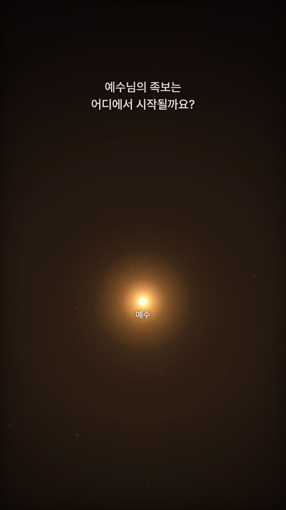
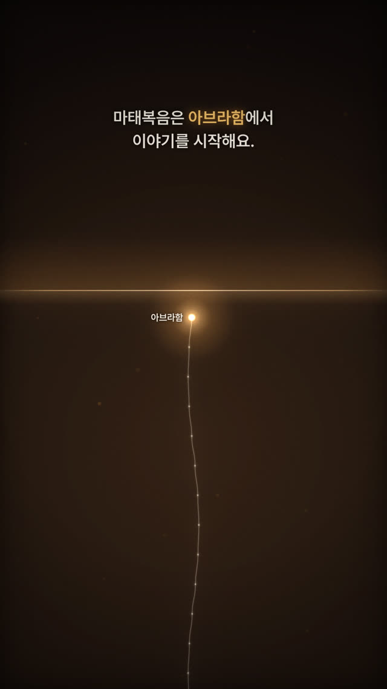
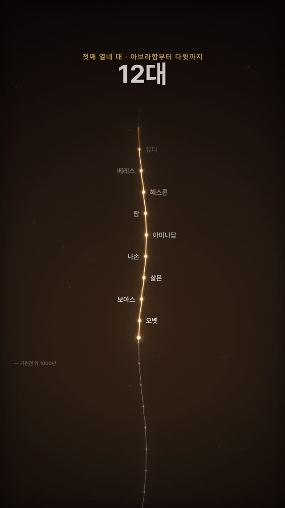
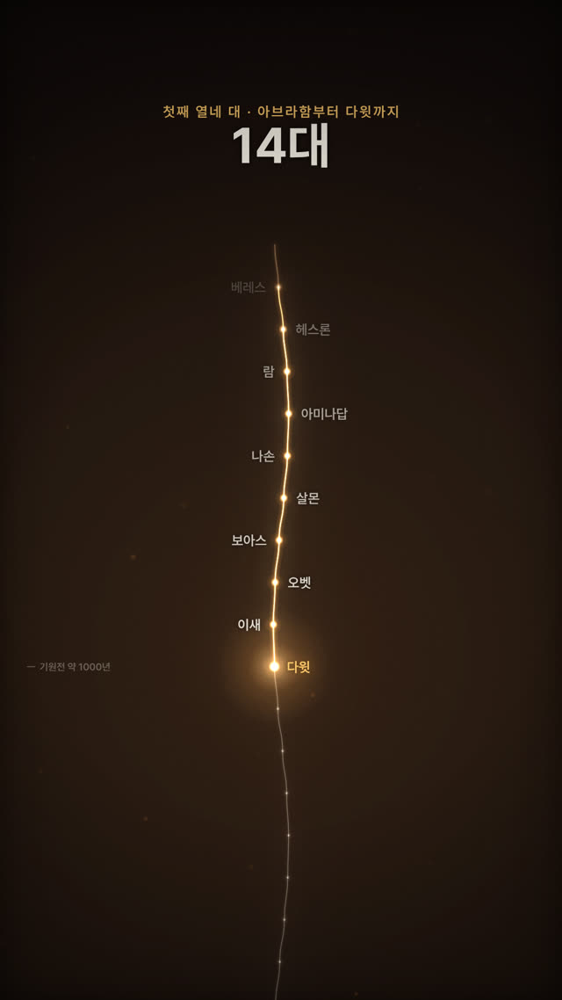
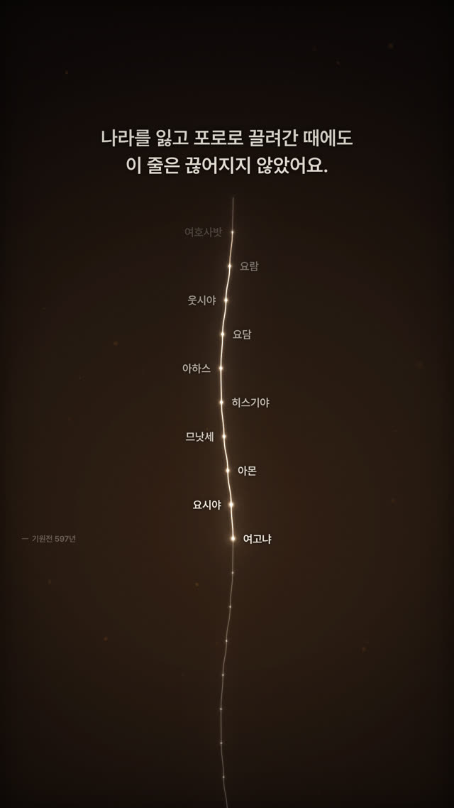
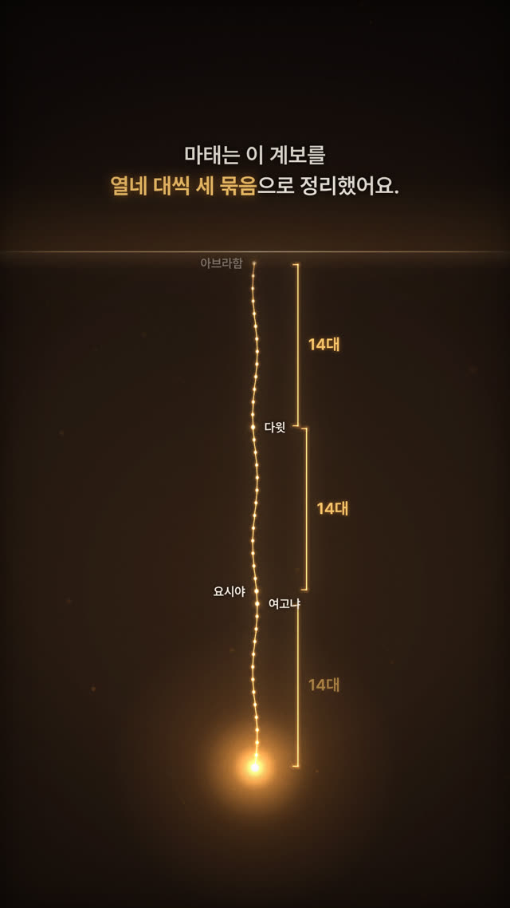
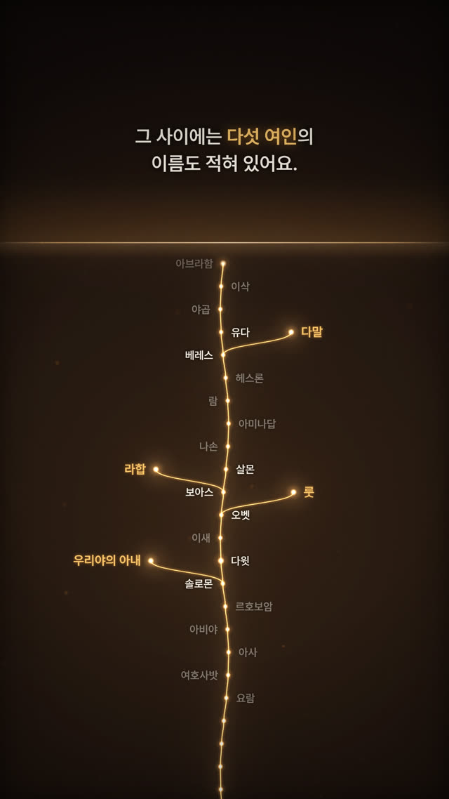
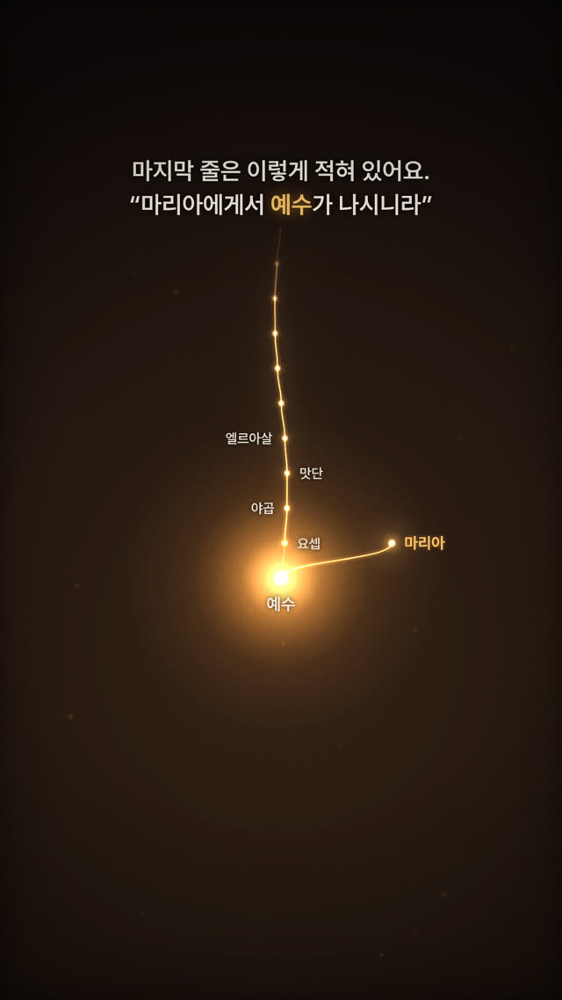

작업 흐름
- 입력
- 주제 하나(예수님의 족보, 조선 왕실 계보, 내 조상의 수, 소문이 퍼지는 속도 …). 레퍼런스 영상이 있으면 그 스틸
- 브리프
- 영상이 말하는 한 문장, 주인공이 되는 점 하나, 주제가 실제로 가진 모양(두 배로 늘어나는 나무 · 한 줄 계보 · 한 점에서 퍼지는 선 · 한 점으로 모이는 선 · 꺼짐과 켜짐), 박자 표, 화면의 모든 이름 · 연대 · 숫자의 출처를 적은
BRIEF.md - 빛과 글자
- 더해지는 빛으로 그리는 S자 선과 점, 빛이 지나가며 켜지는 회색 길, 대가 넘어갈 때마다 흐려지며 바뀌는 숫자, 왼쪽 연대 눈금, 위쪽 두 줄 자막(자막과 숫자는 함께 나오지 않음), 블룸 · 먼지 · 그레인
- 확인
- 스틸 채점 기준(주인공 하나 · 검은 바탕 · 글자 자리 · 모양이 말하는가 · 정직한 숫자 · 빛 하나로 끝남), 규칙 검사, 자막과 숫자가 안전 영역 안에 있고 밑의 빛이 어두워 읽히는지, 모든 글자가 번들 폰트에 있는지, 결정성, 악보 검사
- 출력
- 30fps 1080×1920 MP4(패드 · 종 · 상승음 · 반짝임 합성 사운드 포함), ♪ 버튼으로 소리까지 재생하는 라이브 페이지
cd lineage-glow/examples/jesus-genealogy
node ../../scripts/render.mjs index.html --sheet 24 --scale .5
node ../../scripts/check.mjs index.html
node ../../scripts/score.mjs score.js --dur 102 --out out/jesus.wav
node ../../scripts/render.mjs index.html --workers 4 --audio out/jesus.wav
node ../../scripts/new-film.mjs ../../../my-film요구 사항: Node + Playwright Chromium, ffmpeg. 네트워크와 GPU가 필요 없습니다(102초 영상 3,060프레임을 CPU 워커 4개로 약 7분). 단계별 순서는 SKILL.md에 있습니다.
샘플
예제 「예수님의 족보」의 장면들과 시작 템플릿입니다. 카드를 누르면 새 탭에서 그 순간에 멈춘 장면이 열리고, 브라우저가 선과 글자를 직접 그립니다.
예수님의 족보 9:16 · 102초 · 마태복음 1장과 누가복음 3장
마태복음 1장의 41개 이름을 아브라함에서 예수님까지 위에서 아래로 내려오는 빛으로 읽고, 마태가 정리한 열네 대씩 세 묶음, 다섯 여인, 누가복음이 거슬러 올라가는 아담과 하나님, 한 분에게서 모든 민족에게로 퍼지는 빛까지 이어 갑니다. 원본 릴스에 없는 주제로, 브리프 → 새로 설계 → 검사 → 스틸 채점을 거쳐 만들었습니다.








그 너머 누가복음 3장 · 모든 민족 · 그 이름
누가복음이 아브라함 위로 아담과 하나님까지 거슬러 오르고, 한 분에게서 수많은 선이 퍼졌다가 다시 빛 하나로 모입니다.
출발점 새 영상을 시작하는 파일
new-film.mjs가 복사하는 16초 템플릿 「한 통의 전화」입니다. 한 사람이 두 사람에게 전하면, 서른세 번 만에 지구 전체보다 많아집니다. 원본처럼 두 배로 자라는 나무지만, 주제와 글은 다릅니다.
실제 작품
이 레포에서 만든 스킬입니다. kim__seo_han이 인스타그램에 올린 122초 릴스(빛나는 가계도로 "나 한 사람이 태어나기까지 몇 명이 필요했을까?"를 묻고, 조상 수가 8,589,934,592까지 두 배씩 늘어나고, 조상이 한 점으로 겹치고, 유전자 스위치가 꺼졌다 켜지는 영상)가 출발점입니다. 이 스킬은 그 화풍(검은 바탕의 금빛 선, 흐려지며 바뀌는 숫자, 지평선 아래 겹치는 세대, 꺼짐과 켜짐, 한 점으로 모이는 선, 빛 하나로 돌아오는 끝)만 가져오고, 직접 만든 캔버스 엔진이 코드로 그립니다. 릴스의 글과 주장, 숫자는 쓰지 않았고, 예제 「예수님의 족보」의 구성과 자막, 음악은 모두 이 레포의 것입니다.
링크
- SKILL.md 워크플로
- 폴더 lib · scripts · templates · references · examples
- README.md 빠른 시작
- references/SOURCE.md 레퍼런스 릴스의 박자별 구성, 가져온 것과 가져오지 않은 것
- references/BRIEF.md 주제를 브리프로 바꾸는 틀, 스틸 채점 기준
- references/LOOK.md 팔레트, 화면 배치, 글자, 움직임의 어휘와 API
- references/ENGINE.md Film · 빛 그리기 · 모양 · 악보 API
- references/LESSONS.md 겪은 문제와 해결